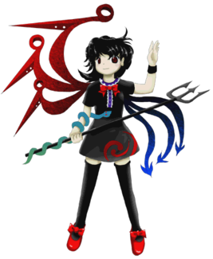
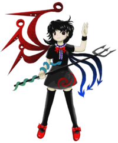

- Welcome to Touhou Wiki!
- Please register to edit. For assistance, check in with our Discord server or IRC channel.
Nue Houjuu
Nue Houjuu hoːd͡ʑɯː nɯe (♫) | |
|---|---|
|
 Nue Houjuu in Undefined Fantastic Object and Ten Desires The Unidentified Fantastic Flying GirlMore Character Titles | |
| Species | |
| Abilities |
Making objects unidentifiable |
| Age |
More than 800 Years old |
| Occupation |
Scaring people |
| Location | |
Music Themes | |
| |
Appearances | |
| Official Games | |
| |
| Print Works | |
| |
- "Nue" redirects here. For the species, see Nue (Species).
Nue Houjuu (封獣 ぬえ Houjuu Nue) is said to be one of the most mysterious and feared youkai in many years, yet has been defeated by humans many times. There are many differing legends according to her appearance because she hides her "true form". At some point, she was sealed underground, and because of the events of Subterranean Animism, she resurfaced back in Gensokyo.
General Information[edit]
Nue Houjuu first appeared in Undefined Fantastic Object as the midboss of Stages 4 and 6 hidden in a ball of light, where she later was shown in her true form as the Extra stage boss. She also later appeared as the Extra stage midboss of Ten Desires. Based on one of Reimu Hakurei's quotes in Touhou Hisoutensoku, as well as chapter 12 of Oriental Sacred Place, she is currently living with Byakuren Hijiri in the Myouren Temple.
Personality[edit]
Nue is a very mischievous girl who reacts badly to anyone finding her true form and enjoys some rather malicious pranks. Despite this, when she found out about how Byakuren Hijiri's followers were friendly to youkai, she did feel a bit of guilt over her actions. For her, all the other persons are young, and usually refers to them in this terms due to her nature of Ancient Youkai. After the events of the Extra Stage in Undefined Fantastic Object, she does go to her temple to train. She isn't well-acquainted with the other youkai at the Myouren Temple, and can apparently be frequently seen near the edges of the property, looking bored.
Ability[edit]
Aside from the power she is known for, Nue has some method to gain contact with the outside world as shown with the case of Mamizou Futatsuiwa in Ten Desires.
- Making objects unidentifiable
Nue is able to conceal the true nature of other objects, an ability she displayed in Undefined Fantastic Object to conceal the nature of the fragments of the Flying Vault. An object that has lost its "identity" will appear to be a different thing depending on who observes it. The observer's brain will then attempt to fill in the blanks itself.
Nue has made said to Reimu Hakurei "it was terrible when my true form was revealed," which indicates that her human-shaped form is her true form.
Character Design[edit]
Name[edit]
Her full name is Nue Houjuu (封獣 ぬえ). Like Satori, her first name is also the name of her species, nue. Nue's family name, Houjuu (封獣), literally means "sealed beast" as written. "封" may reference Nue been trapped underground before the events of Undefined Fantastic Object, with "獣" references her species to being a beast.
Design[edit]
Nue has short black hair and dark red eyes, three red metallic-looking wings on the right side of her back, and three blue arrow-shaped tails coming out from her left side. She carries a trident, has a snake on her right arm (which might be the Seed of Unknown Form), and also wears a black wristband on her left wrist. Her dress is all black with blue and white trim in the middle, a red bow on the front, and a small, yin-yang-like tomoe design at the bottom corner of the skirt of her dress. She wears black thigh-high stockings and red shoes with bows on them. In most official artworks she is drawn with pointed ears.
Nue's Appearances[edit]
Games[edit]
| Attention: This section is a stub and it needs expanding with more information related to the section's topic. If you can add to it in any way, please do so. |
- Undefined Fantastic Object

During the events of Undefined Fantastic Object, she found out that Minamitsu Murasa and the other youkai who were also sealed underground made it above ground and were planning something. Not knowing exactly what, she decided to have some "fun" by putting Seed of Unknown Form in the fragments of Flying Storage, one of the elements needed to revive Byakuren Hijiri. The snakes contained in the seeds caused the fragments to scatter into the air; the characters initially believe that the geyser from Subterranean Animism was the cause. These become the iconic UFOs that the player encounters during the game.
During stages 4 and 6, she was hiding her true form as a ball of light and sees the heroine collecting the fragments and decides to secretly follow her, either helping or getting in her way. She eventually realizes what the plan of the other youkai is, and figures that it would benefit her, so she settles on helping the heroine achieve that goal. She appears in the Extra Stage as her true form during the heroine's investigation of the Seed of Unknown Form.
After Sanae B's scenario, it is implied that she and Sanae Kochiya have their picture taken by Aya Shameimaru.
- Ten Desires
Nue Houjuu calls out her trumpcard Mamizou Futatsuiwa from the outside world to defeat Toyosatomimi no Miko, but she was already defeated by the heroine. She eventually encountered the heroine and was thus defeated.
Spin-offs[edit]
- Double Spoiler
In Double Spoiler, Nue appeared as a stage 12 target, where she uses a few spell cards and had Aya Shameimaru and Hatate Himekaidou take photos of her and her danmaku.
- Hopeless Masquerade
Nue made a background cameo appearance in Hopeless Masquerade on the Palanquin Ship stage. She is seen floating around behind the ship.
Literature[edit]
| Attention: This section is a stub and it needs expanding with more information related to the section's topic. If you can add to it in any way, please do so. |
- Symposium of Post-mysticism
- Forbidden Scrollery
Relationships[edit]
Nue appears to have known Minamitsu Murasa and Ichirin Kumoi before the events of Undefined Fantastic Object.
She is also currently living at Byakuren Hijiri's temple near the Human Village, because Byakuren was too nice to ostracize her.
Mamizou Futatsuiwa is her friend. Nue called her in during Ten Desires to defeat Toyosatomimi no Miko.
Gallery[edit]
Illustration of Nue in Symposium of Post-mysticism
Spell Cards[edit]
| Name | Translated | Comments | Games | Stage | ||
|---|---|---|---|---|---|---|
| Total: 20 | ||||||
| 妖雲「平安のダーククラウド」 | Ominous Clouds "Heian Dark Clouds" | UFO | St. Ex | |||
| 正体不明「忿怒のレッドＵＦＯ襲来」 | Unidentified "Red UFO Invasion of Rage" | UFO | St. Ex | |||
| 鵺符「鵺的スネークショー」 | Nue Sign "Mysterious Snake Show" | UFO | St. Ex | |||
| 正体不明「哀愁のブルーＵＦＯ襲来」 | Unidentified "Blue UFO Invasion of Grief" | UFO | St. Ex | |||
| 鵺符「弾幕キメラ」 | Nue Sign "Danmaku Chimera" | UFO | St. Ex | |||
| 正体不明「義心のグリーンＵＦＯ襲来」 | Unidentified "Green UFO Invasion of Justice" | UFO | St. Ex | |||
| 鵺符「アンディファインドダークネス」 | Nue Sign "Undefined Darkness" | UFO | St. Ex | |||
| 正体不明「恐怖の虹色ＵＦＯ襲来」 | Unidentified "Rainbow UFO Invasion of Terror" | UFO | St. Ex | |||
| 「平安京の悪夢」 | "Nightmare of Heiankyou" | UFO | St. Ex | |||
| 恨弓「源三位頼政の弓」 | Grudge Bow "The Bow of Genzanmi Yorimasa" | UFO | St. Ex | |||
| 正体不明「紫鏡」 | Unidentified "Purple Mirror" | DS | St. 12 | |||
| 正体不明「赤マント青マント」 | Unidentified "Red Cloak, Blue Cloak" | DS | St. 12 | |||
| 正体不明「厠の花子さん」 | Unidentified "Ms. Hanako of the Toilet" | DS | St. 12 | |||
| 「遊星よりの弾幕Ｘ」 | "Danmaku X from a Wandering Star" | DS | St. 12 | |||
| アンノウン「軌道不明の鬼火」 | Unknown "Will-o'-wisps in Unidentified Orbit" | TD | St. Ex | |||
| アンノウン「姿態不明の空魚」 | Unknown "Skyfish with Unknown Shape" | TD | St. Ex | |||
| アンノウン「原理不明の妖怪玉」 | Unknown "Youkai Orb of Unknown Mechanics" | TD | St. Ex | |||
| 神星符「正体不明の怪光人だかり」 | Divine Star Sign "Unidentified Ghost-Light Crowd" | Co-owner with Mamizou | VD | Nightmare Thursday - 1 | ||
| 緋星符「正体不明の落雷」 | Scarlet Star Sign "Unidentified Lightning Strike" | Co-owner with Iku | VD | Nightmare Thursday - 4 | ||
| 輝星符「正体不明のドンドコ太鼓」 | Shining Star Sign "Unidentified Dondoko Daiko" | Co-owner with Raiko | VD | Nightmare Thursday - 6 | ||
Additional Information[edit]
- Similar to Kogasa Tatara, she tends to scare off people by using the fear of the unknown, or the fear of her true form.
- Nue is the first(?) character ZUN himself has drawn with thigh-highs, and she seems to appeal to "zettai ryouiki" fans, referring to the area of bare skin between a skirt and thigh-highs. There is a slight shadow of doubt over this since Suwako's sprite in Mountain of Faith clearly shows her wearing thigh-highs while her drawn portrait shows her wearing socks long enough to be thigh-highs but are slightly folded down to where her knees should be. Mystia Lorelei also seems to be wearing stockings reaching above her knees in her drawn portrait in Imperishable Night.
- A number of Nue's danmaku have various references:
- They're heavily reminiscent of other characters', such as Flandre, Yukari, Rumia, and Hina. Specifically, they tend to act as combinations of spell cards, often using one element from one, and one from another.
- The spell card "Danmaku X from a Wandering Star" in Double Spoiler has danmaku in shapes resembling that of the PlayStation's button logos (×, ○, ∆ and □).
- In Kyoto, the streets are laid out in grid-like pattern. Her spell card "Nightmare of Heiankyou" refers to this.
- Nue's first non-spell card attack resembles Vivit's (Erich's daughter) first attack in her second form in Shuusou Gyoku.
- Nue is the only Extra Stage boss to appear as a midboss in multiple stages. Ran Yakumo has been a midboss in one stage.
- Nue's appearance as a ball of light midboss on stages 4 and 6 is similar to the stage 2 midboss of Mystic Square. Yuuka also turned into a ball of light during her battle in Lotus Land Story. However, she bears the most similarity to the Mysterious Orb in Lotus Land Story. Their appearances are identical, and both drop items when leaving the screen, each ending with an extra life.
- Nue has the tag "Heian" on her song and a couple of her spell cards. Heian may be referring to the Heian period (794 AD–1185 AD) of Japanese history (traditionally depicted as a Golden Age in Japanese History) and/or to a former capital city of Japan (794 AD–1868 AD), "Heian-Kyo" (平安京), which is now the city of Kyoto. Her age of approximately 800 years also places her origins at the end of or during the Heian period.
- Her theme song's name might refer to "Heian-Kyo Alien" (平安京エイリアン), a game developed in 1979.
- The bass line on the first part of her theme music is borrowed from UFO, the best hit song of Pink Lady.
- Nue is the first Extra stage boss in the Windows series to have not met the final boss prior to the start of the game in which she first appears.
- Nue is the first character to appear as a boss in the Extra stage of two different Touhou Project games.
Fandom[edit]
Official Profiles[edit]
|  | ○エキストラボス 未確認幻想飛行少女 封獣 ぬえ（ほうじゅう ぬえ） 種族：鵺 余りにも不可思議。 幾度となく人間に退治され、その都度、姿形が異なって伝えられた。 しかしそれらは全て作られた伝説である。 それにも飽きて、長い間地底でのんびり住んでいたのだが、今年の初めの間欠泉騒ぎのどさくさに紛れて地上に出てきた。 地下にいた時に一緒だったムラサ達も地上に出てきて、何やら企んでいるのを見た。 正体不明の種は小さな蛇の様な不思議な飛行体で、決まった姿が無い。 霊夢達には木片が空を飛ぶ筈が無いと思っていたので、未確認飛行物体の代表的な形である、円盤ＵＦＯに見えた。 ムラサ達には飛倉の破片は、勝手に間欠泉によって散り散りになった様に見えたが、実は世界にばらまかれたのはこの正体不明の種の仕業であった。 どうも、他人が楽しそうに何かをしていると、見えないところから邪魔したくなってしまう。それが彼女である。 しかし、その正体不明の飛行物体を嬉々として集める人間が現れた。 結局ムラサが行っていた事は、自分にも益がある事だと知り後で後悔する事となる。 白蓮はそんな自分の復活を邪魔した彼女も受け入れた。 |
○Extra boss The Unidentified Flying Fantastic Girl Nue Houjuu Species: nue A great curiosity. She's been defeated by humans many times before, but each time, accounts of her appearance are different. According to one legend, she had the head of a monkey, the body of a raccoon dog, the legs of a tiger, and the tail of a snake. According to yet another legend, she had the head of a cat, the body of a chicken, and the tail of a snake. These legends were all made up, though. Eventually she got tired of that and leisurely spent a long time deep beneath the earth's surface, but she got mixed up in the turmoil surrounding the geyser incident and appeared above ground once more. She saw Murasa and the others who had been underground with her also come above ground and start plotting something. "Ah, finally I can have some fun again", she thought, and decided to give them some trouble by attaching the Seed of Unknown Form to the fragments of the Flying Storage. The Seed of Unknown Form was a small snake-like flying object with no determined form. Since Reimu and the others didn't think that a block of wood had any business flying in the sky, they thought it was a round UFO of the sort that most exemplified unidentified flying objects. Murasa and company thought that the fragments of the Flying Storage had been scattered about by the geyser, but it was in fact thanks to the Seed of Unknown Form. In any case, when it looked like others were having fun, Nue would find a way to mess with them from afar. She didn't know what Murasa's group was planning, but she thought it would be funny if they failed. However, humans appeared who seemed happy at the appearance of that unidentified flying object. Eventually she found out that what Murasa was doing would benefit her, too, and came to regret what she'd done. However, Byakuren did not ostracize her for having meddled with her return. |
Official Sources[edit]
- 2009/08/15 Undefined Fantastic Object - Extra Stage dialogue; Settings and Extra Story.txt (official profile)
- 2009/08/15 Touhou Hisoutensoku - Reimu's VS dialogue with Marisa
- 2009/12/25 Interview on Undefined Fantastic Object with Chara☆Mel
- 2010/03/14 Double Spoiler - Stage 12 spellcard comments
- 2010/12/25 Oriental Sacred Place - Chapter 12
- 2011/08/13 Ten Desires - Extra Stage dialogue; Settings and Extra Story.txt (official profile)
- 2011/11/25 Wild and Horned Hermit - Chapter 9 (cameo)
- 2012/04/27 Symposium of Post-mysticism
| This page is part of Project Characters, a Touhou Wiki project that aims to write proper descriptions for all official characters of Touhou Project. Please keep the character page guidelines in mind when contributing. |